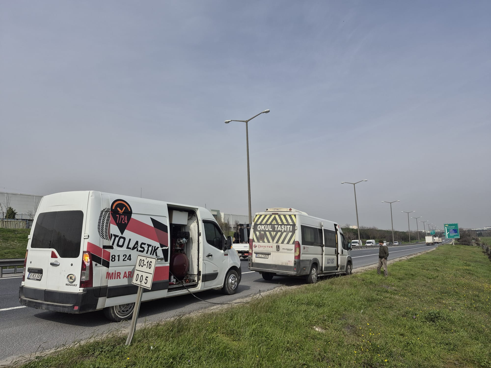

Silivri'nin Güvenilir Oto Lastik Merkezi
Yıldırım Oto Lastik olarak 2004 yılından bu yana Silivri ve çevresinde lastik satış, montaj, rot balans ve mevsimsel lastik değişimi hizmetleri sunuyoruz. Her araç tipine uygun çözümler, uygun fiyatlar ve profesyonel ekip ile yanınızdayız.
Hemen AraHİZMETLERİMİZ
Silivri'de Kapsamlı Lastik Hizmetleri
Aracınızın lastik ihtiyaçlarını tek bir noktadan karşılıyoruz. Binek otomobillerden hafif ticari araçlara, SUV'lerden kamyonetlere kadar her araç tipine hizmet veriyoruz.
Lastik Satış ve Montaj
Michelin, Bridgestone, Continental, Pirelli, Goodyear, Lassa, Petlas ve Hankook gibi markaların geniş ürün yelpazesinden aracınıza uygun lastiği seçiyor, profesyonel ekipmanlarla montajını yapıyoruz.
Rot ve Balans Ayarı
Bilgisayarlı rot ve balans cihazlarımızla aracınızın düzgün yol tutuşunu sağlıyor, lastik ömrünü uzatıyoruz. Düzensiz lastik aşınması ve direksiyon titremesi sorunlarını ortadan kaldırıyoruz.
Mevsimsel Lastik Değişimi
Yaz ve kış lastiklerinizin zamanında değişimini yapıyoruz. Kullanılmayan lastikleriniz için saklama hizmeti de sunuyoruz. Mevsim geçişlerinde güvenliğiniz için doğru zamanda lastik değişimi kritik öneme sahiptir.
Lastik Tamiri ve Yama
Patlak veya delik lastiklerinizin tamirini yapıyoruz. Profesyonel yama ve onarım işlemleri ile lastiğinizi tekrar kullanılabilir hale getiriyoruz.
Neden Silivri'de Yerel Lastik Servisi?
Uzak merkezlere gitmek yerine, bulunduğunuz bölgede güvenilir bir lastik servisinden hizmet almanın birçok avantajı vardır.
Hızlı Erişim
Silivri merkezde konumlanan servisimize kolayca ulaşabilirsiniz. E-5 yan yol üzerindeki konumumuz sayesinde hem şehir içinden hem de transit geçen araçlara hızlı hizmet veriyoruz.
Kişisel İlgi
Büyük zincirlerin aksine, her müşterimizi tanıyor ve aracınızın geçmişini biliyoruz. Aracınızın ihtiyacına özel çözümler sunuyoruz, gereksiz ürün veya hizmet önerisi yapmıyoruz.
Güven ve Süreklilik
20 yılı aşkın süredir aynı lokasyonda hizmet veriyoruz. Silivri halkının güvenini kazanmış, referanslarla büyüyen bir işletmeyiz.
Çalıştığımız Markalar
Her bütçeye ve ihtiyaca uygun lastik seçenekleri sunuyoruz. Dünya genelinde güvenilirliğini kanıtlamış markalarla çalışıyoruz.
Hizmet Bölgemiz
Silivri merkez ve çevre mahallelerinin yanı sıra yakın ilçelere de hizmet veriyoruz.
- Silivri Merkez ve tüm mahalleler
- Selimpaşa, Kavaklı, Gümüşyaka
- Çanta, Ortaköy, Fenerköy
- Büyükçekmece, Çatalca çevresi

Sıkça Sorulan Sorular
Silivri'de en yakın lastikçi nerede?
Yıldırım Oto Lastik, Mimarsinan Mah. Mimarsinan Cad. Çaldıran Sk. No:32'de, Silivri merkezde yer almaktadır. 0 545 436 81 24 numarasından ulaşabilirsiniz.
Lastik fiyatları ne kadar?
Lastik fiyatları marka, ebat ve modele göre değişmektedir. Binek araç lastikleri 1.500 TL'den, hafif ticari lastikler 2.500 TL'den başlamaktadır. Güncel fiyatlar için bizi arayın.
Kredi kartına taksit yapıyor musunuz?
Evet, tüm banka kartlarına 3, 6 ve 9 taksit seçeneklerimiz mevcuttur.
Lastik ihtiyacınız mı var?
Hemen arayın, aracınız için en uygun çözümü birlikte belirleyelim.